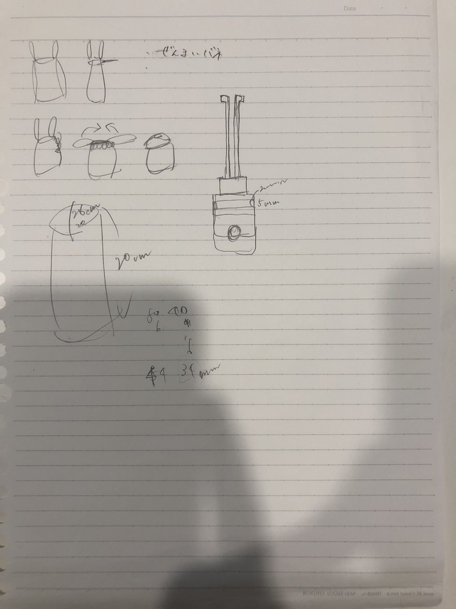

Subject活動内容

| ポータブルゴミ箱 | メンバー：あづま・すぎの・なかがわ（五十音順） |
|---|---|
| 背景・悩み | 鎌倉は観光地でゴミのポイ捨てが多い 鎌倉市内にゴミ箱がないので捨てられない |
| 必要技術（予想） | ３DPのPLAで試作 必要に応じて１００均などで金具 |
| ごみをポイ捨てる心理とは？ | ごみ箱がない？ 捨てる場所がない？ ポイ捨てすることに抵抗がない？ 自身では気づかずうっかり落としてしまっている。 |
| 利用する人とは？ | まめな人？ ポイ捨てすることに抵抗がある？ |
| どのようなモノにする？ | 携帯できる 小さく 軽く 持ち歩くのに便利な大きさ 小さなカバンでも入るような大きさ（スマホぐらい？） ペットボトルよりかは小さく |
| アイディア | １，袋を収納して取り出せるような携帯型のごみ箱 袋を入れる手間、取り出す手間を抑える ２，袋の出入り口を挟む、摘まむ １と２共通してどのような袋の形状でも使えるものにする。（ポリ袋、コンビニ袋など） |
| アイディアヒント | 携帯灰皿 携帯用衣類クリーナー（約直径２．６×高さ１１．５ｃｍ） |
| 大まかな役割分担 | １，ごみ袋収納 （あづま・なかがわ） ２，ごみ袋止め （すぎの） |
| イメージ |  |